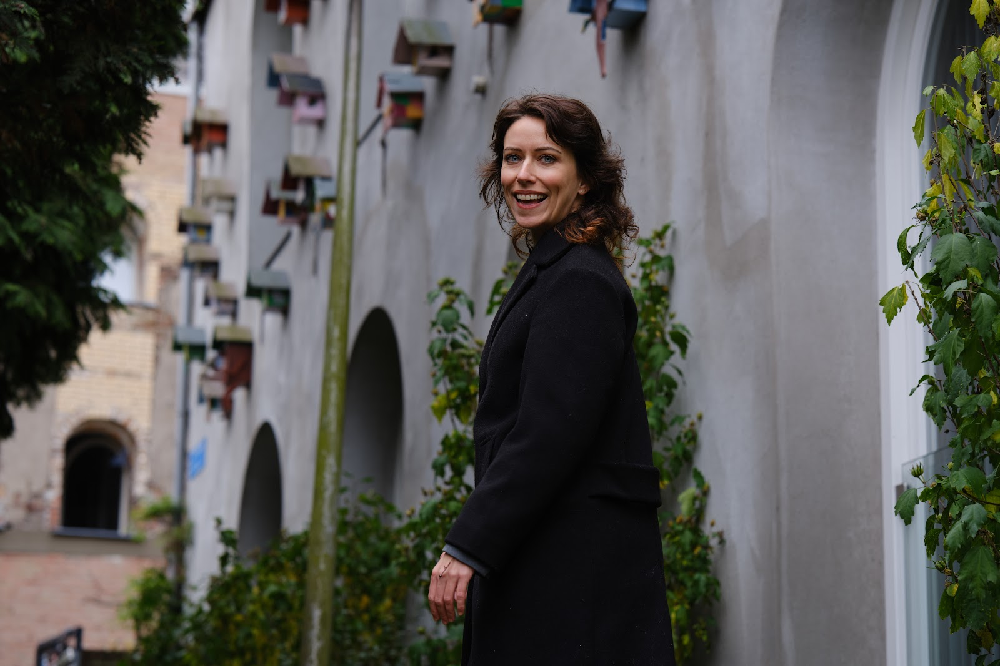
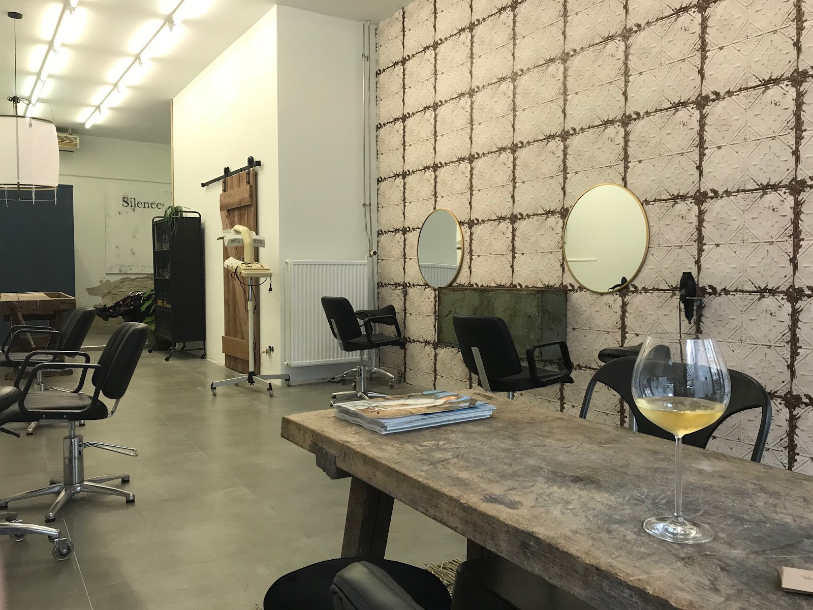
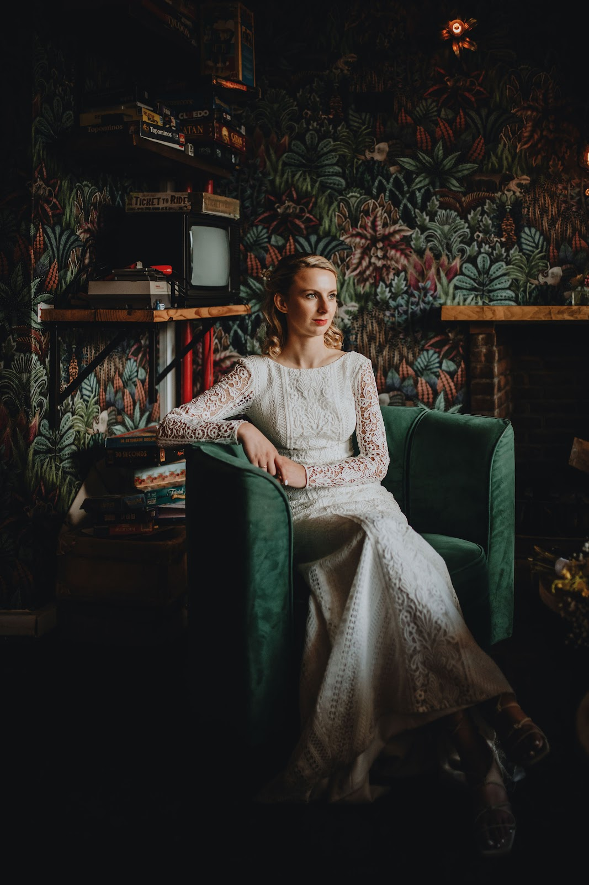
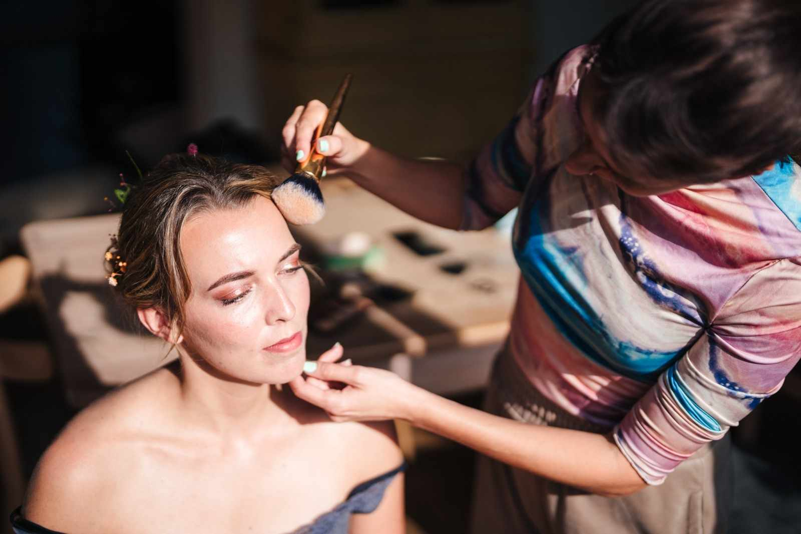
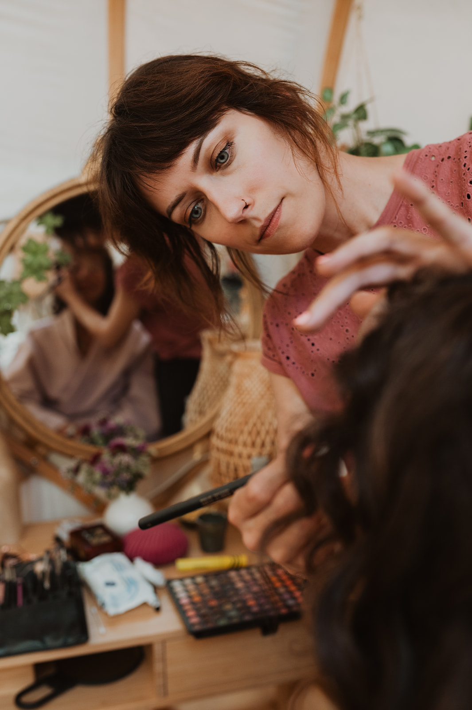
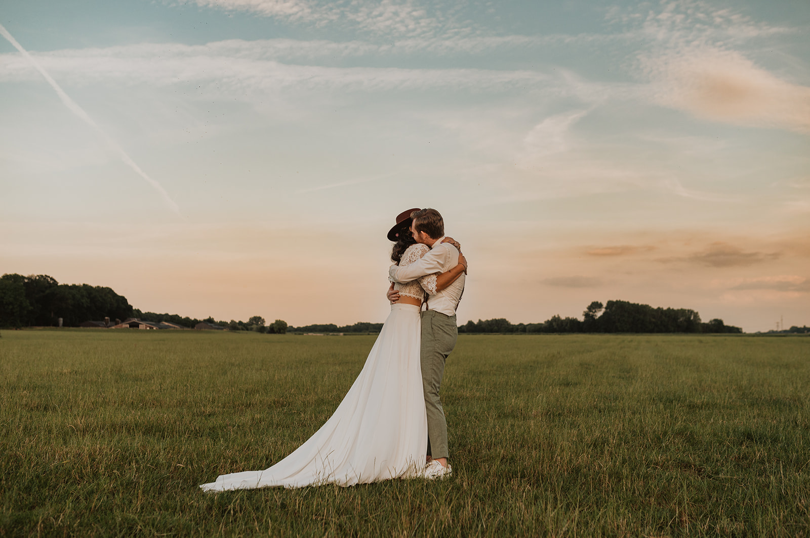

Sanne Smits, natuurkapper in Nijmegen
Een kapper die naar je luistert. Die niet meer afknipt dan je wilt. En die niet alleen over het weer praat.
Kapper, visagist en bruidsstylist. Ik werk met natuurlijke kleuringen en producten, neem de tijd voor je en zet er een haver cappuccino of verse kruidenthee bij.


Geen troep meer in je haar
Ruim 14 jaar werk ik als kapper in Nijmegen. Tegenwoordig kleur ik alleen nog met natuurlijke, plantaardige pigmenten van Greenheads Sweden en gebruik ik natuurlijke producten.
Zo wordt je haar weer gezond, en merk je zelf hoe fijn het is om er geen chemische troep meer in te stoppen. Knippen, kleuren, highlights: ik denk met je mee en knip niet meer dan je wilt.
- Kapperknippen en kleuren
- Visagistmake-up, natuurlijke look
- Bruidhaar en make-up
Je trouwdag, en alle tijd ervoor
Ga je trouwen? Dan kijken we samen wat er mogelijk is voor je bruidskapsel en bruidsmake-up. We beginnen met een rustige proefsessie, waarin we dingen uitproberen tot het klopt.
Op de dag zelf kom ik naar je toe, strak op tijd en met alles wat nodig is. Mijn make-up blijft het liefst natuurlijk: jij, op je mooist.




Wat klanten over Sanne zeggen
5 sterren uit 47 Google-reviews
"Ik ben zelden zo blij geweest met het resultaat meteen na een kappersbezoek. Ze dacht ook heel goed mee en is daarnaast gezellig in de omgang. Aanrader!"
"Sanne was geweldig voor mijn bruiloft! De proefsessie voor haar en make-up was super ontspannen. We hebben veel dingen uitgeprobeerd en er was alle tijd..."
"Sanne is sinds een aantal jaar mijn vaste kapster en toen ik voor mijn bruiloft iemand zocht om mijn haar en make-up te doen wist ik meteen dat ik haar ook voor die speciale dag helemaal kon vertrouwen..."
Openingstijden
| Maandag | 10:00 - 18:00 |
| Dinsdag | 10:00 - 18:00 |
| Woensdag | Gesloten |
| Donderdag | 10:00 - 19:00 |
| Vrijdag | 10:00 - 17:00 |
| Zaterdag | 09:00 - 17:00 |
| Zondag | Gesloten |
Ik werk op afspraak. Bel of mail even, dan plannen we een moment.